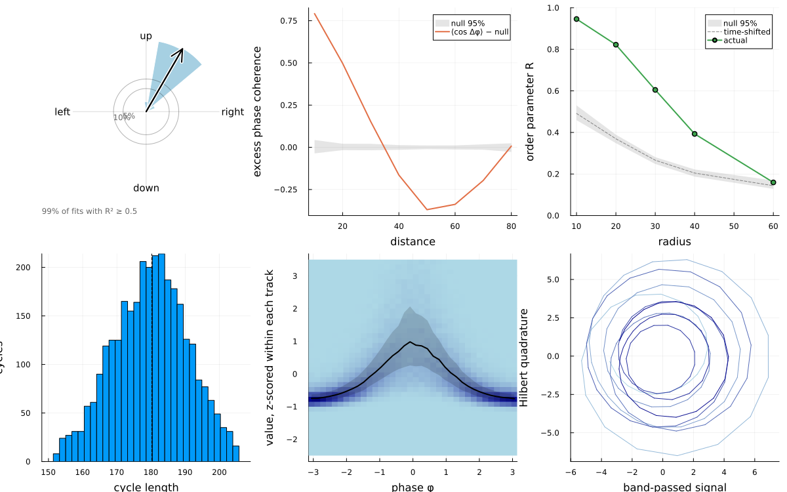
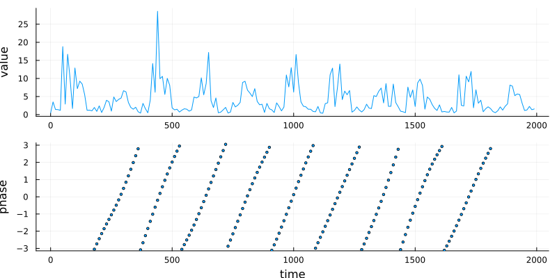
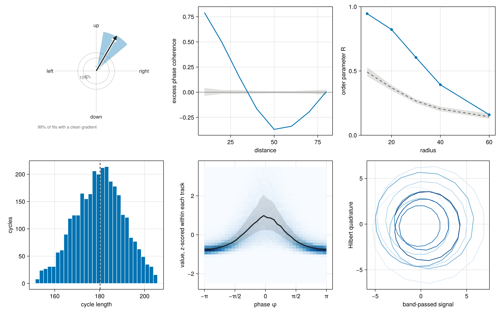

Plotting
Each readout has a function that returns plot-ready numbers, and recipes for Plots.jl and Makie that draw them.
roseData, coherenceData, orderParameterData, cycleLengthData, phaseValueData, traceData and portraitData return plain numbers and polygons, for any plotting package. With Plots.jl loaded, plot(result) draws the default view.
The plot-data functions hold every decision about what to draw, so a hand-built figure and a recipe show the same thing. The rose diagram is the main one: wedges of bin degrees whose length is √share, so that wedge area is proportional to the number of fits; reference rings at 5% and 10%, labelled along the shortest wedge where they overlap least; and an arrow for the mean direction whose length is the mean resultant length R times the outer radius. Wedges are coloured by median speed.
Plots.jl
using CellPhases, Random, Plots
include(joinpath(pkgdir(CellPhases), "test", "agent_field.jl")) # toy agents
field = agentField(; n = 400, L = 300.0, nframes = 200, step = 0.5, rng = Xoshiro(1))
v = planeWave(field.positions; dt = 10, period = 180, speed = 0.5, direction = 60, noise = 0.6,
rng = Xoshiro(2))
p = cellPhases(field.positions, v, field.ids; dt = 10, band = (100, 300))
w = PhaseWaves(p; r = 30, frames = 1:4:200)
c = PhaseCoherence(p; dr = 10, rmax = 80, frames = 1:4:200, rng = Xoshiro(3))
o = OrderParameter(p; radii = [10, 20, 30, 40, 60], frames = 1:4:200, rng = Xoshiro(3))
plot(plot(w), plot(c), plot(o), plot(CycleLengths(p)), plot(PhaseValueCheck(p)),
plot(p, :portrait, 7); layout = (2, 3), size = (1200, 750))
One agent's trace and phase:
plot(p, :trace, 7; size = (800, 400))
Makie
With a Makie backend loaded, each readout has a recipe: roseplot, coherenceplot, orderparameterplot, cyclelengthplot, phasevalueplot and portraitplot, each with a ! form, and plot(result) picks the matching one.
using CairoMakie
CairoMakie.activate!(type = "png")
fig = Figure(size = (1200, 750))
roseplot(fig[1, 1], w)
coherenceplot(fig[1, 2], c)
orderparameterplot(fig[1, 3], o)
cyclelengthplot(fig[2, 1], CycleLengths(p))
phasevalueplot(fig[2, 2], PhaseValueCheck(p))
portraitplot(fig[2, 3], p, 7)
fig
The Makie recipes are in ext/CellPhasesMakieExt.jl, loaded with Makie; core declares the functions (src/makie.jl) so they can be exported and documented. Each recipe computes its inputs from a plot-data function with map! on the plot's compute graph and sets its axis through Makie.preferred_axis_attributes, which needs Makie 0.24.11 or later.
Decided: Makie recipes live in a package extension on Makie; RecipesBase recipes stay in core. Why: the plan was MakieCore recipes in core, but Makie 0.24 folded MakieCore into Makie and no longer depends on it (the last MakieCore, 0.10, pairs with Makie 0.23). Recipes written against MakieCore would be invisible to current Makie. An extension also gets the full Makie API, including preferred_axis_attributes for the rose's equal-aspect, undecorated axis.
The data behind the rose
rose = roseData(w)
(; rose.meandirection, rose.resultant, rose.clean, rose.up, rose.down)(meandirection = 59.928263140260235, resultant = 0.9908590472318887, clean = 99.3747655370764, up = 97.50849377123443, down = 0.025166729583490626)Recipes are in src/recipes.jl and use only RecipesBase; each draws from a plot-data function and adds nothing of its own beyond styling. A second Symbol argument picks among views (plot(p, :trace, id), plot(p, :portrait, id), plot(w, :rose)). Tests run the recipes through RecipesBase.apply_recipe without a plotting package.
Decided: the core has plot-data functions and RecipesBase recipes built on them; no multi-panel figure is packaged. Why: plot data is plain numbers, so it carries no plotting dependency and serves any package. A composite figure is an analysis choice (which signals, which panels, which cross- check with SpaceTimeCorrelations) and stays in analysis scripts.